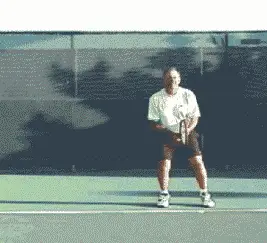
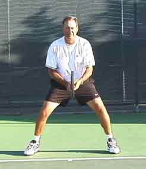
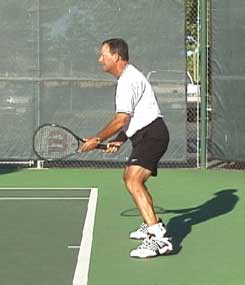
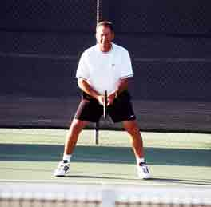
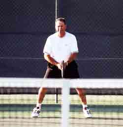
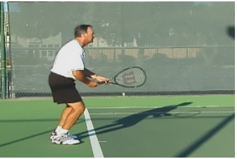
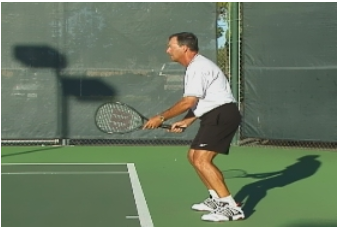
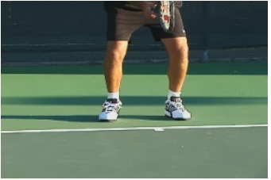
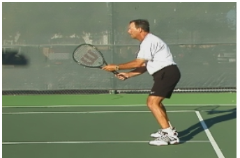

← Bài trước: Lateral and Forward Movement | 🏠 Footwork Trang chủ | Bài tiếp: → First Two Steps: The Key to Quickness
Bộ chân di chuyển: Thế đứng chuẩn bị
Thư viện kiến thức quần vợt thống nhất — Cơ bản, Phân tích kỹ thuật, Thư viện tham khảo và nhiều hơn nữa
Bộ chân di chuyển: Thế đứng chuẩn bị
Michael Friedman

Bắt đầu từ thế đứng chuẩn bị thấp với thế đứng rộng, học cách thực hiện bước chia đôi chân khi cần thiết, giữ thấp với gối uốn cong khi di chuyển đến bóng và khi phục hồi.
Nguyên tắc bí mật để trở thành tay vợt xuất sắc là bộ chân di chuyển xuất sắc! Bộ chân di chuyển xuất sắc có nghĩa là khả năng di chuyển vào vị trí để đánh bóng và sau đó phục hồi và sẵn sàng cho cú đánh tiếp theo. Bộ chân di chuyển xuất sắc sẽ cải thiện phản ứng của bạn đối với bóng và cách bạn đánh bóng. Nó sẽ đưa bạn vào vị trí tốt nhất một cách nhất quán và cải thiện cú đánh của bạn. Nó sẽ giúp bạn tạo ra sức mạnh từ mặt đất và đi lên qua cơ thể của bạn. Bộ chân di chuyển tốt sẽ cung cấp nhịp điệu và thời gian cho điểm, và nhiều hơn nữa.
Điều này có thể nghe như là điều đơn giản, nhưng nó đòi hỏi công sức và kỷ luật để phát triển. Các huấn luyện viên quần vợt dạy thế đứng chuẩn bị trong bài học đầu tiên cho người mới bắt đầu, nhưng có thể không nhấn mạnh đủ với mọi cấp độ chơi. Tôi thường quay lại thế đứng chuẩn bị trong hầu hết các bài học. Nếu học viên có thể thực hiện bước đầu tiên một cách chính xác và quay lại thế đứng chuẩn bị, họ có thể thực hiện bước đầu tiên đến cú đánh tiếp theo theo cách tương tự. Sự nhất quán này xây dựng tự tin.
Điểm xuất phát để phát triển bộ chân di chuyển xuất sắc là thế đứng chuẩn bị đúng với trọng tâm thấp và thế đứng rộng, được thể hiện ở trên trong các góc nhìn từ trước và bên.
Có các yếu tố vật lý, kỹ thuật và tinh thần trong thế đứng chuẩn bị này. Bài viết này tập trung vào các yếu tố vật lý. Bạn có thể đọc về các khía cạnh tinh thần trong bài viết đầu tiên của tôi trong loạt bài này, có tên là "Nỗi tập trung". Tôi sẽ đề cập đến các yếu tố kỹ thuật trong một bài viết sau.


Điểm xuất phát để phát triển bộ chân di chuyển xuất sắc là thế đứng chuẩn bị thể thao với trọng tâm thấp và thế đứng rộng, được thể hiện ở trên trong các góc nhìn từ trước và bên.
Mỗi quả bóng bạn phản ứng trong quần vợt đều khác nhau so với mọi quả bóng khác. Bằng cách phản ứng từ cùng một thế đứng chuẩn bị mỗi lần, thực hiện cùng một bước đầu tiên, bạn sẽ phát triển ký ức cơ bắp giúp bạn phản ứng theo cùng một cách cơ bản tốt với tất cả các tình huống khác nhau. Và bạn có thể học cách làm điều này một cách tự động.
Các tay vợt nên bắt đầu chuẩn bị, hoặc thiết lập thế đứng chuẩn bị, khi đối thủ của họ đang đánh bóng. Hầu hết các tay vợt thường nghĩ về những gì họ đang làm chỉ khi họ đang đánh bóng. Thực tế, bạn cần thời gian để nghĩ về thế đứng chuẩn bị của mình và thách thức bản thân quay lại nó khi đối thủ của bạn đang đánh cú đánh tiếp theo.
Thiết lập thế đứng chuẩn bị
Bạn có thể vào thế đứng chuẩn bị ngay bây giờ trong khi bạn đang đọc điều này, và phát triển cảm giác về vị trí này. Khi bạn đến sân, đứng một yard sau baseline và làm điều tương tự.
Rộng thế đứng của bạn sao cho chân của bạn cách nhau một chút hơn chiều rộng vai. Bây giờ hãy thử rộng hơn một chút cho đến khi bạn cảm thấy chân của bạn cách nhau quá rộng. Điều này có thể khiến bạn cảm thấy không thoải mái nhưng nó có thể là đúng. Cảm thấy như bạn đang đứng thẳng. Lưng dưới của bạn là lõm, tức là phần dưới lưng của bạn uốn cong vào phía xương sống. Vai của bạn là bằng phẳng và đầu của bạn hướng về phía trước.
Bây giờ uốn gối của bạn và kéo xuống với ngón tay của bạn và chạm vào đỉnh của khớp gối, trong khi giữ lưng của bạn thẳng. Cảm thấy như trọng lượng của bạn đã chuyển sang phần đầu ngón chân và móng chân của bạn. Không nên có trọng lượng trên phần đốt chân. Đừng nâng phần đốt chân, chỉ giữ trọng lượng xa khỏi chúng. Khi bạn nhìn xuống, bạn sẽ thấy gối của bạn che móng chân của bạn.


Nếu bạn có thể nhìn thấy giao điểm của sân và hàng rào phía sau khi nhìn qua lưới, thế đứng chuẩn bị của bạn quá cao.
Từ thế đứng chuẩn bị đúng, thấp, bạn đang nhìn qua lưới để nhìn thấy giao điểm của mặt sân và hàng rào phía sau.
Khi bạn đến sân, thiết lập vị trí này và nhìn lên. Bạn nên nhìn qua lưới để nhìn thấy nơi mặt sân gặp hàng rào phía sau. Nếu bạn đang nhìn qua lưới để nhìn thấy giao điểm này, bạn quá cao. Hạ vị trí của bạn cho đến khi bạn nhìn thấy giao điểm của mặt sân và hàng rào phía sau qua lưới. Vị trí này nên cảm thấy như bạn đang bảo vệ ai đó trong bóng rổ, hoặc bạn đang chơi vị trí linebacker trong bóng đá, hoặc shortstop trong bóng chày. Vị trí thể thao cơ bản này nên được sử dụng trong tất cả các môn thể thao bóng.
Giữ vị trí trọng tâm thấp này và di chuyển chân của bạn trong chỗ cho mười giây như bạn đang chạy nhanh nhất có thể. Cảm thấy sự nhanh nhẹn, tính linh hoạt và cân bằng của bạn bằng cách giữ chân của bạn cách nhau và gối của bạn uốn cong. Thử nghiệm và xem bạn nhanh và linh hoạt như thế nào khi bạn đứng thẳng với chân của bạn sát nhau và lại thử di chuyển chân của bạn nhanh nhất có thể. Bạn nên có thể di chuyển chân của bạn nhanh hơn nhiều khi bạn thấp hơn. Khi bạn uốn gối, rộng thế đứng và giữ lưng của bạn thẳng, bạn đang tạo ra đòn bẩy trong móng chân, chân, gối, gối và hông.
Giữ vị trí trọng tâm thấp này sẽ cho phép bạn di chuyển đến bóng với phần dưới của cơ thể trong khi giữ lưng hoặc xương sống của bạn tương đối thẳng và thẳng. Điều này sẽ cung cấp sự cân bằng tốt và cho phép bạn đánh bóng một cách chính xác, tạo ra một vẻ đẹp! Gối uốn cong và lưng thẳng có thể nhắc bạn đến Groucho Marks chạy quanh sân và đó có thể là một hình ảnh tốt để bạn giữ trong tâm trí nếu bạn có thể giữ cho mình không cười.
Vị trí này có thể nghe như là điều đơn giản nhưng nó không dễ dàng! Giữ gối uốn cong có nghĩa là bạn đang căng các cơ bắp tứ đầu, đùi sau, gối, đùi trước, và mông, cùng với nhau tạo thành nhóm cơ lớn nhất của cơ thể bạn. Những cơ này sẽ đòi hỏi một lượng máu lớn hơn. Bạn sẽ chắc chắn bắt đầu cảm thấy nó trong nhịp tim và hô hấp của mình. Thử đứng trong thế đứng chuẩn bị đúng trong một phút. Bạn sẽ cảm thấy nó!
Đây là một vị trí đòi hỏi nhiều về mặt thể chất hơn, và đó có thể là lý do tại sao bạn lại thích đứng thẳng với gối khóa và nghỉ ngơi một chút khi đối tác hoặc đối thủ của bạn đang đánh. Nhưng hãy nhớ, trong khi bóng đang chơi không có thời gian để nghỉ. Hạ xuống thế đứng chuẩn bị và chuẩn bị để thời gian bước chia đôi của bạn. Bạn có thể nghỉ giữa các điểm, nhưng không giữa các cú đánh!
Nếu bạn bắt đầu từ vị trí trọng tâm thấp này với gối uốn cong, bạn đã sẵn sàng ở vị trí gối uốn cong cho cú đánh của bạn!
Gối của bạn nên luôn uốn cong và trong thế đứng chuẩn bị của bạn, khi bạn di chuyển đến bóng, đánh bóng, và phục hồi về giữa sân.
Hãy quan sát kỹ lần tới khi bạn đến một trận đấu bóng chày. Mỗi khi bóng chạm vào bàn, toàn bộ đội nội trường đều thực hiện bước chia đôi chân? Điều này cảnh báo cho người chơi nội trường sẵn sàng di chuyển theo bất kỳ hướng nào khi bóng bay khỏi gậy của người đánh bóng. Điều tương tự cũng đúng mỗi khi đối thủ của bạn đánh bóng. Bạn đang ở vị trí phòng thủ, sẵn sàng phản ứng. Bước chia đôi được thời gian sao cho chân của bạn cách nhau ba đến bốn inch hơn khi bạn bắt đầu. Chân của bạn nên chạm đất ngay khi bóng chạm vào gậy của đối thủ. Thời gian bước chia đôi của bạn với cú đánh của anh ấy. Chạm đất thấp và trên móng chân, sẵn sàng chuyển trọng lượng theo hướng bạn thấy bóng bay khỏi gậy của đối thủ. Sự chuyển trọng lượng này cũng được gọi là tải trọng.
Bạn có thể thấy điều này tốt nhất khi xem quần vợt trên truyền hình bằng cách nhìn vào gối của các tay vợt hàng đầu. Xem cách gối uốn nhiều hơn về phía bên mà người chơi đang di chuyển. Xem người trả giao bóng chuẩn bị cho cú giao bóng. Các tay vợt trả giao bóng xuất sắc thường bắt đầu với chân của họ cách nhau rất xa. Họ có thể bắt đầu với cơ thể của họ uốn cong từ eo, nhưng chỉ khi người giao bóng chuẩn bị ném bóng họ sẽ đứng thẳng hơn một chút nhưng vẫn giữ chân của họ cách nhau. Sau đó họ chia đôi chân của họ xa hơn, được thời gian với bóng chạm vào gậy của người giao bóng.
Bước đầu tiên trên baseline

Bước đầu tiên đến bóng trên cú thuận tay.
Bước đầu tiên diễn ra ở phần dưới của cơ thể nơi gối, gối và hông chuyển hoặc tải trong hướng mà họ nhìn thấy giao bóng đi. Bạn sẽ thấy nhiều tay vợt hàng đầu giữ cơ chế chuyển này trong chuyển động bằng cách chuyển sang trái phải ngay trước khi người giao bóng giao bóng. Nếu bạn dự đoán và chuyển sai hướng, bạn chỉ có thể đánh một cú trả giao bóng phòng thủ. Bước phản xạ đầu tiên là chìa khóa để chuẩn bị cơ thể xoay sang phía bóng đi. Nếu phần dưới của cơ thể đang chuyển một hướng và phần trên đang xoay hướng khác, bạn đang gặp rắc rối lớn.
Chi tiết cuối cùng trong bước đầu tiên là một sự nghiêng nhẹ của phần trên của cơ thể, hoặc vai, về phía lưới. Nếu bạn là tay phải và bạn đang xoay sang phải cho cú thuận tay, bạn nên hạ vai trái về phía lưới. Phần dưới của cơ thể của bạn đang chuyển sang phải và trong khi phần trên đang xoay sang phải nó đang nghiêng sang trái.

Đây là bước đầu tiên tương tự trên bên trái tay.
Đối với cú trái tay, vai phải nên hạ xuống về phía lưới. Sự nghiêng này chuẩn bị cơ thể để được sắp xếp khi bạn bước vào cú đánh với trọng lượng đi về phía lưới.
Bài tập luyện tập
Đầu tiên hãy thử điều này mà không có bóng. Bắt đầu sau baseline trong thế đứng chuẩn bị. Xem mối quan hệ giữa đỉnh lưới và hàng rào phía sau. Giữ phần dưới của hàng rào dưới lưới trong suốt bài tập này. Thực hiện bước chia đôi chân, giữ thấp và đi ba bước đến cú thuận tay, sau khi hoàn thành cú đánh của bạn, hãy đi xuống và bước sang bên để trở lại giữa sân. Nếu bạn thấy phần dưới của hàng rào di chuyển từ dưới lưới lên trên lưới, trọng tâm của bạn đã lên.
Hãy luyện tập điều này mà không có bóng đến cú trái tay cũng vậy. Làm điều này một lần cho mỗi bên và sau đó thêm lần lặp lại. Xem bạn có thể làm bao nhiêu lần sang hai bên. Làm hai hoặc ba cú thuận tay liên tiếp và sau đó làm hai hoặc ba cú trái tay liên tiếp. Cảm thấy như bạn đang chơi một điểm mà không có bóng. Sau đó hãy để huấn luyện viên của bạn ném bóng cho bạn và xem bạn có thể duy trì trọng tâm thấp không.

Đây là mẫu chuyển động đúng đến bóng và phục hồi. Luyện tập và xem bạn có thể làm bao nhiêu lần lặp lại, giữ trọng tâm thấp.
Bước đầu tiên tại lưới
Đầu tiên hãy thực hiện bài tập này mà không sử dụng bóng. Vào thế đứng chuẩn bị tại lưới. Thực hiện bước chia đôi chân. Tại lưới khi bạn thực hiện bước chia đôi chân, chân của bạn nên chạm đất phía sau bạn một chút để trọng lượng của bạn nghiêng về phía trước. Điều này sẽ buộc bạn phải tấn công bóng.
Bây giờ chuyển hoặc tải trọng lượng của bạn về phía cú thuận tay. Lưu ý bạn phải bước sang sau khi chuyển trọng lượng của bạn để đánh cú bắt lưới. Phục hồi bằng cách bước lại với cùng chân bạn bước và sau đó chia đôi chân.

Lưu ý cách chân chạm đất phía sau bạn sau bước chia đôi chân. Điều này cho thấy trọng lượng của bạn đang đi về phía trước.
Mẫu trái tay tương tự. Chuyển hoặc tải trọng lượng của bạn. Bây giờ bước sang để thực hiện cú đánh. Phục hồi bằng cách bước lại và chia đôi chân.
Bây giờ hãy để huấn luyện viên của bạn ném bóng cho bạn và thời gian bước chia đôi của bạn với cú đánh của huấn luyện viên. Xem bóng được đánh bởi gậy của huấn luyện viên và nói từ "CHIA ĐÔI" khi anh ấy đánh và lấy thời gian khi chia đôi.
Luyện tập thế đứng chuẩn bị, bước chia đôi và bước đầu tiên trước gương và xem bạn trông như thế nào khi thực hiện bước này. Nó có thể cảm thấy lạ ban đầu, nhưng nó sẽ trông và hoạt động tốt!

Michael Friedman đã dành hơn 30 năm để giảng dạy và huấn luyện quần vợt. Hiện tại anh là Giám đốc Quần vợt tại Millennium Sports Club ở Rancho Solano, nơi anh quản lý một chương trình phát triển trẻ và chương trình người lớn hoạt động. Michael đã là một phần không thể thiếu trong Hiệp hội Quần vợt Chuyên nghiệp Hoa Kỳ Phân khu California Bắc, và đã phục vụ làm Chủ tịch từ năm 2000 đến năm 2001. Anh đã là người phát biểu tại nhiều hội nghị quần vợt USTA và USPTA ở California Bắc, chuyên về việc giảng dạy bộ chân di chuyển và cơ bản cho tay vợt cũng như huấn luyện viên. Michael đã được trao danh hiệu USPTA Norcal Pro of the Year năm 2003.
Nguồn: tennisplayer.net lưu trữ — Footwork - Ready Position.docx (Thư viện giảng dạy của John Yandell, 2002-2022). Trích xuất và hiển thị dưới dạng HTML cho Tennis Future Lab.